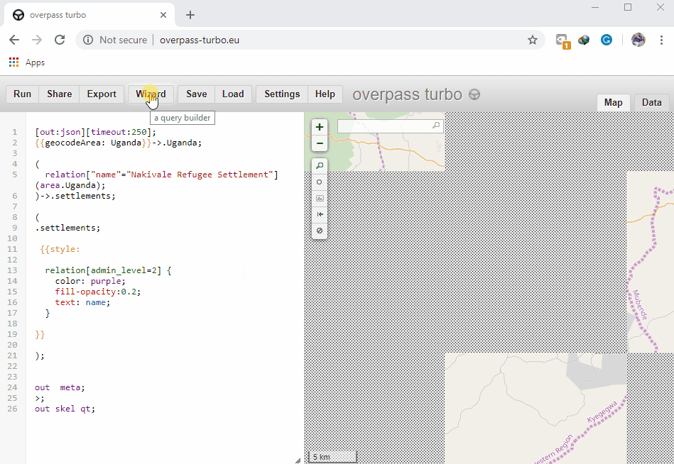

7.3 Créer une carte Web et interactive
Objectifs du cours
Cette section vous explique comment visualiser les données OSM sous la forme d’une carte web et interactive. À la fin de cette section, vous devriez être en mesure de :
- Comprendre comment utiliser overpass-turbo pour visualiser les données OSM sous forme de carte interactive.
- Comprendre comment utiliser uMap pour visualiser des données spatiales.
- Comprendre comment relier les données de overpass-turbo à uMap
Activités d’apprentissage
Les cartes interactives sont considérées comme l’équivalent moderne de la communication visuelle avec des cartes. Il s’agit de la création et de l’étude de la représentation visuelle des données (cartes). Pour communiquer l’information de manière claire et efficace, la visualisation des données utilise des graphiques statistiques, des tracés, des graphiques d’information et d’autres outils. L’utilisation de cartes interactives permet aux utilisateurs de modifier librement l’affichage de la carte en fonction de leurs préférences.
Cette section présente deux outils permettant de créer des cartes interactives à partir de données OSM : uMap et Overpass Turbo. uMap vous permet de créer rapidement des cartes avec des couches OSM. La plateforme propose des exemples de cartes pour vous inspirer dans l’utilisation des couches, des points d’intérêt, de la conception et des licences. Overpass Turbo Query est un outil de filtrage de données basé sur le web pour OSM. Vous pouvez exécuter des requêtes et analyser les données OSM résultantes de manière interactive sur une carte. Un assistant intégré facilite la création de requêtes.
Construire une carte avec Overpass-turbo
Overpass Turbo Query est un outil d’exploration de données basé sur le web pour OpenStreetMap. Il exécute n’importe quel type de requête de l’API Overpass et affiche les résultats sur une carte interactive.
Compétences et technologies nécessaires
- Ordinateur avec
- Connexion Internet
- Recommendé: souris d’ordinateur
Niveau de compétence requis : Débutant/Intermédiaire
Comment utiliser Overpass Turbo
- Dans votre navigateur enter https://overpass-turbo.eu/ pour charger Overpass Turbo
- Cliquez sur Assistant dans la barre supérieure pour créer une requête de données

- Créez une requête. Par exemple, tapez highway=* (Cette requête recherche toutes les autoroutes dans la zone d’intérêt) dans le champ de recherche et cliquez sur ‘Créer une requête’.

- Dans le champ de recherche situé à votre droite (Map Canvas), tapez la zone qui vous intéresse (par exemple Kampala, Ouganda), puis zoomez sur la zone.

- Dans la barre supérieure, cliquez sur Exécuter pour obtenir les données. (Après le chargement des points de données sur le canevas de la carte)

- Cliquez sur Exporter dans la barre supérieure. Dans la section Carte, téléchargez la carte interactive et partagez l’adresse URL.
Construire une carte avec uMap
uMap vous permet de créer une carte avec des couches OpenStreetMap et de l’intégrer à votre site. Le tout en quelques minutes. Vous pouvez créer des cartes personnalisées (voir les exemples ci-dessous). Il est alimenté par des logiciels libres, sous licence WTFPL.
Compétences et technologies nécessairres
- Ordinateur avvec
- Connexion internet
- Recommendé: Souris d’ordinateur
Niveau de compétence requis: Débutant/intermédiaire
Comment utiliser umap?
- Dans votre navigateur web, entrez http://umap.openstreetmap.fr/en/
- Dans la barre supérieure, cliquez sur login/signup et choisissez l’application tierce (OpenStreetMap - Icon) à utiliser.
- En utilisant le compte OpenStreetMap, accordez l’accès à l’Umap et vous serez redirigé vers l’interface uMap.
- Dans le coin supérieur droit, cliquez sur l’onglet “Créer une carte”
- Dans la barre supérieure, cliquez sur Édition, Carte sans titre pour fournir le titre de la carte, la description de la carte et configurer les paramètres interactifs et de symbologie de la carte.


- Cliquez sur SAUVEGARDER après chaque action pour éviter de perdre les modifications apportées.
- Cliquez sur l’icône d’importation de données dans les outils d’édition (barre de droite) pour ajouter des données à la carte. Naviguez jusqu’à l’endroit où vos données sont stockées et importez-les.

- Cliquez sur l’icône Gérer les données dans les outils d’édition (barre de droite), puis cliquez sur le bouton Modifier (crayon) pour modifier les propriétés visuelles des données, telles que la couleur et le style de l’icône.

- Cliquez sur Enregistrer dans la barre supérieure pour que les modifications apportées soient enregistrées.
- Rafraîchissez la page et, dans le panneau de gauche, cliquez sur l’icône de partage pour copier le lien qui peut être partagé pour la carte interactive générée ou intégrer la carte dans un site web personnalisé.

Lier uMap et Overpass-turbo
La liaison entre uMap et Overpass Turbo permet de mettre à jour votre uMap interactive au fur et à mesure de la mise à jour des données OpenStreetMap.
Compétences et technologies nécessaires
- Ordinateur avecc
- Internet connexion
- Recommendé: Souris d’ordinateur
Comment lier uMap et Overpass Turbo
-
Après avoir créé une requête dans overpass-turbo.eu, cliquez sur Export, Query, puis sur compact.
-
Copiez le lien de la requête sous forme de texte et collez-le dans un éditeur de texte (par exemple, notepad). Si vous utilisez la fonction “copier le lien” de votre navigateur, vous devrez peut-être d’abord décoder l’URL en la collant ici et en cliquant sur Décoder avant de la copier pour l’éditer dans un éditeur de texte.
-
Ensuite, nous devons prendre ce texte et le généraliser pour qu’il fonctionne sur n’importe quelle zone cartographique :
-
Add http://overpass-api.de/api/interpreter?data= avant le texte copié.
-
Remplacer les coordonnées de latitude et de longitude codées en dur par ({south},{west},{north},{east}). Cette opération devra être effectuée à trois reprises ; après noeud , chemin , et relation .
-
Le résultat final devrait ressembler à:
http://overpass-api.de/api/interpreter?data=[out:json][timeout:25];(node[“source”=”HOT-UG”]({south},{west},{north},{east});way“source”=”HOT-UG”;relation“source”=”HOT-UG”;);out body;>;out skel qt;
-
Naviguez maintenant vers umap.openstreetmap.fr.
-
Cliquez sur Créer une carte et effectuez un panoramique/zoom sur la zone qui vous intéresse.
-
Cliquez sur le bouton des calques, puis sur Modifier (le symbole du crayon).
-
Dans le volet de droite, cliquez sur Données distantes et collez l’URL que nous avons construite à l’étape 6 dans la case Url.

- Sélectionnez “osm” dans la liste déroulante Format.
- Cochez la case dynamique.
- Facultatif : Si vous avez beaucoup de données, vous pouvez limiter l’affichage à certains niveaux de zoom (afin de ne pas trop solliciter les serveurs Overpass). Vous pouvez le faire en entrant un niveau de zoom minimum dans la case From Zoom. Ici, j’ai saisi 13 comme niveau de zoom minima.
- Customize using the options on the right. Here, I’ve changed the map background to OSM monochrome and I’ve changed the color of the overlay data.
- Cliquez sur Plus à gauche, puis sur Intégrer et partager cette carte.
- Copiez et collez l’iframe intégrable (il se peut que vous deviez cliquer sur Affichage actuel au lieu de l’affichage de la carte par défaut dans la boîte d’options de l’iframe).
[Quiz] Testez vos connaissances
-
uMap vous permettra de créer votre propre carte interactive en utilisant des données OpenStreetMap et d’autres jeux de données géospatiales
a.Vrai
b.Faux
-
En reliant votre uMap à Overpass API, vos données OpenStreetMap seront mises à jour en fonction de la version des données sur le serveur OSM actuel
a.Vrai
b.Faux
Answer: 1. A| 2. A
Liste de contrôle des activités
À la fin de cette section, vous devriez être en mesure de :
- Faire fonctionner Overpass-turbo pour visualiser les données OSM.
- Construire une carte interactive à l’aide de uMap
- Lier le projet uMap à l’API Overpass pour maintenir les données OSM à jour